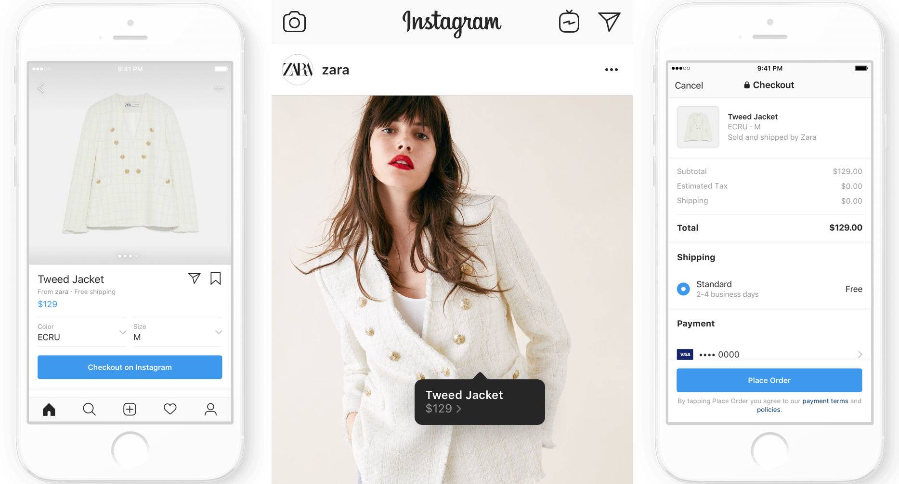

4.2 Digital fashion
Omni-channel fashion:
As commerce moved from ‘bricks and mortar’ stores to online retailing, the concept of ‘multi-channel’ was established to address the idea that retailers used a range of channels to market including physical stores, online stores and possibly other channels such as catalogues, direct selling and, more recently, mobile commerce to reach their target market. The notion of multi-channel suggests that each channel is almost a sepa- rate entity in its own right. However, as the number of channels has increased, each with its own limitations and benefits, consumers are increasingly using more than one channel when it comes to making a purchase. For example, they may use certain channels for information searching and another channel for making the final purchase. A report from global technology company Cisco reported that consumers ‘touch’ a brand an average of 56 times between inspiration and transaction. These ‘touchpoints’ can include traditional retail channels including window shopping or going online to view a television advertisement, or hearing a radio spot promoting a local sale and, increasingly, new media touchpoints such as social networking, blogs, communities, video and location-based services are becoming an integral part of the consumer shopping journey. Research suggests that multi-channel shoppers spend, on average, 15%–30% more than shoppers who use only one channel and estimates that omni-channel shoppers will spend 20% more than multi-channel shoppers. This has given rise to interest, both in the indus- try and in academia, in the concept of omni-channel retailing whereby all the channels are considered together in a more integrated way. Omni-channel retailing can be defined as a customer experience integrated across stores, websites, direct mail and catalogues, mobile platforms, social networks, home shopping and gaming. Omni-channel retail is an integrated shopping experience that blends the advantages of physical stores with the information-rich merits of online shopping. Despite widespread industry reporting on omni-channel as the success strategy for the future of retail, as well as some very early academic research on the topic, many retailers are finding it difficult to implement a successful omni-channel strategy; thus future fashion marketing research in the area of omni-channel is likely to be highly valued by practitioners.
Social media in fashion marketing
Social media is now identified as part of the overall selling process and is a feature of omni-channel retail which has attracted significant interest in industry and acade- mia over recent years both as a direct-selling tool and as a marketing communications tool. Social media such as Facebook, Twitter and Flickr are used by billions worldwide, and their use is not limited to the young; increasingly, Generation X consumers are also engaging in social media. Social media can be defined as a group of internet-based applications allowing both the creation and exchange of user-generated content, for example, blogs, collaborative projects, social networking (e.g. Facebook), virtual gam- ing, content communities (e.g. YouTube) and virtual social worlds (e.g. Second Life). Social media can help businesses understand more about their customers and help customers to make more informed decisions about their purchases [106]. Businesses regard social media as being hugely significant in terms of marketing strategy and almost all of the major fashion brands and retailers have a presence in social media, for exam- ple, through Twitter or Facebook. Social media has offered a democratisation of fashion retail, in the sense that it can also be used in the same way by small independent fashion retailers as is the case for large multinational fashion businesses, at very low cost. In observing the industry there is a sense that fashion businesses feel they ‘have to be on social media’ and huge proportions of their marketing budget are being spent on social media activities, but with little in the way of understanding how it can be used to achieve core marketing benefits. This represents an opportunity for fashion marketing research. There has been some consideration of the strategic benefits of social media in fashion marketing, for example, Kim and Ko analysed the impact of social media on purchase intention and customer relationships and customer equity of luxury fashion brands.